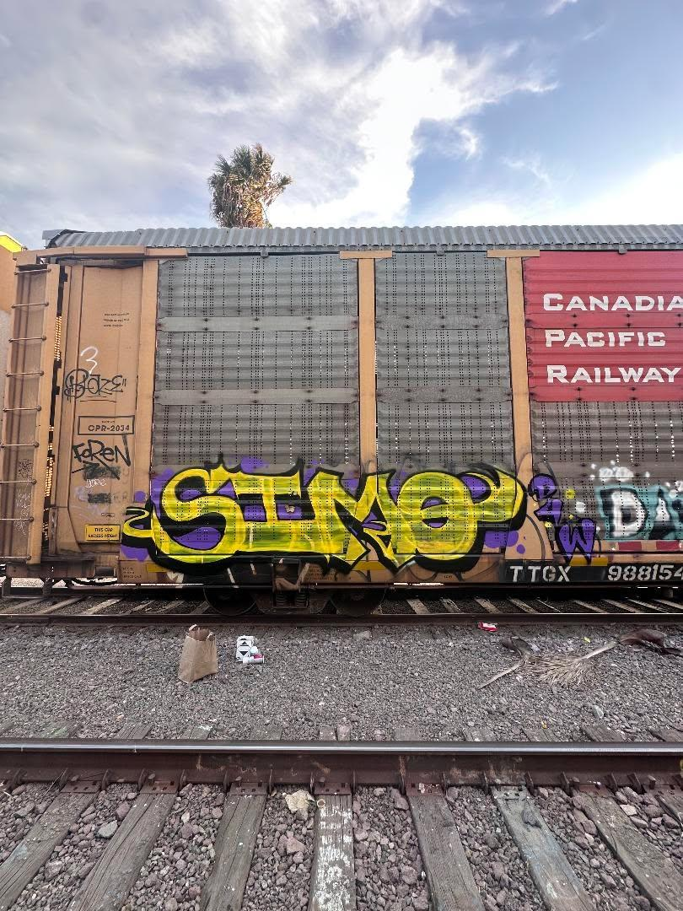
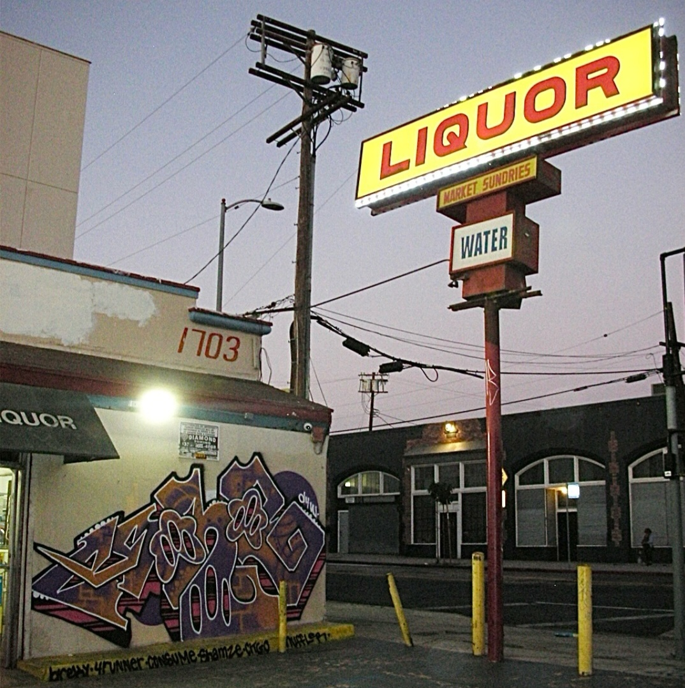

Graffiti Art is just a way of expressing oneself through street art. No matter how it's perceived, it's a form of artistic expression. Therefore, it should be recognized as a legitimate art form. Graffiti artists use various techniques and styles to create their works, and their art can be found in many different locations around the world. My life has been influenced by the vibrant culture of graffiti art. I use the skills I've learned from this art form in my daily life. The exposure to this art form has shaped my perspective and creativity in profound ways.

Train Graffiti Art Lakers Color scheme

East Coast Style Graffiti Liquor store Production